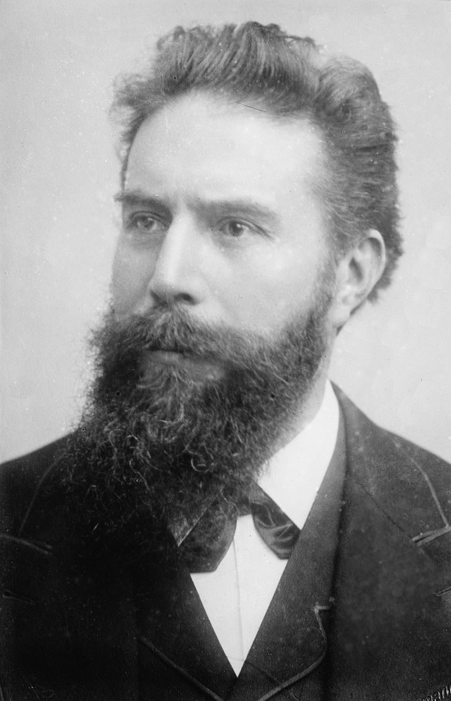
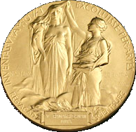

Nobelpriset
Nobelpriset i fysik är ett av de fem Nobelprisen, inrättade genom Alfred Nobels testamente. Alfred Nobel specificerade att ett av prisen skulle gå till den som under det gångna året inom fysikens område har gjort den viktigaste upptäckt eller uppfinning
. Till en början utsågs pristagarna strikt enligt denna bedömning, men efter några år tolkade Nobelstiftelsen om innebörden av det gågna året
så att det inte gällde bara det senaste året utan att upptäckten slagit igenom i forskarvärlden det senaste året.
Pristagare utses i början av oktober varje år av den svenska Kungliga Vetenskapsakademien, och utdelas 10 december i Stockholms Konserthus då pristagarna får motta priset ur konungens hand. Priset har utdelats sedan 1901 då det tilldelelades Wilhelm Conrad Röntgen för sin upptäckt av Röntgenstrålningen.
Bland de 206 personer som fram till och med 2017 hade mottagit Nobelpriset i fysik var endast två varit kvinnor, båda med födelsenamnet Maria. Den senaste var Maria Goeppert-Mayer som 1963 fick Nobelpriset för kvantgruppteorin. Både 2018 och 2020 fick en kvinna vara med och dela på priset, ingen av dem hette dock Marie.
Kungliga Vetenskapsakademins medalj representerar naturen i form av en gudinna som liknar Isis, som stiger upp genom molnen och håller ett ymnighetshorn i sina armar. Slöjan som täcker hennes kalla och strama ansikte lyft upp upp av vetenskapens geni.
Inskriptionen på medaljen lyder:
Inventas vitam iuvat excoluisse per artes
Orden på medaljen betyder bokstavligen: Det är fördelaktigt att ha förbättrat (mänskligt) liv genom upptäckta konster
.